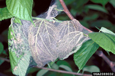

| Home |
| PEST OF AMARANTHUS |
mAJOR PESTS |
| 1. Amaranthus stem weevil |
| 2. Amaranthus caterpillar or webber |
mINOR PESTS |
| 1. Leaf webber |
| 2. Leaf webber |
| 3. Tortoise beetle |
| 4. Grasshopper |
| 5. Leaf twisting weevil |
| 6. Aphids |
| 7. Mealy bugs |
| 8. Thrips |
| Questions |
| Download Notes |
PESTS OF AMARANTHUS :: MAJOR PESTS :: AMARANTHUS CATERPILLAR OR WEBBER
2. Amaranthus caterpillar or webber: Hymenia recurvalis (Pyraustidae: Lepidoptera)
Distribution and status :
Destructive pest. Widely distributed in tropical and subtropical regions including Africa, Asia and Australia. In the Indian sub-continent it is found all the year round, but is more active during warmer, rainy and early winter months.
Host range
Amaranthus, beans, melons, spinach, coleus, Luffa spp., grasslands and pastures
Damage symptoms
|  |
Hymenia recurvalis - Damage Symtoms |
Larvae scrape the epidermal and palisade tissues of leaves; web the leaves with silken threads resulting in drying of webbed leaves.
Bionomics
IPM
- Collect and destroy wild amaranthus hosts in the vicinity of cultivated crop.
- Collect and destroy affected plant parts along with grubs and adults